Перголы, арки, шпалерники, трельяжи.

Перголы, шпалерники, трельяжи – это архитектурно-строительные элементы, которые оптически разделяют сад на отдельные части или, наоборот, связывают его в единое целое. Даже еще не обжитый растениями каркас из дерева или металла привлекает внимание красотой и изяществом формы и служит украшением сада. Увитые растениями и цветами, они производят прекрасное впечатление.
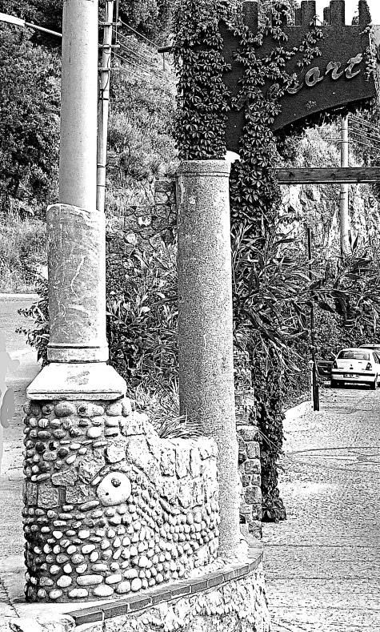
При сооружении перголы важно соблюдать ее пропорции в соотношении с размером дома, площадью участка и высотой других строений на нем. Оптимальной является высота в пределах 2 м: слишком низкая конструкция вызывает ощущение стесненности. При этом следует учитывать, что оплетенная вьющимися растениями, она кажется ниже и уже, чем есть на самом деле.
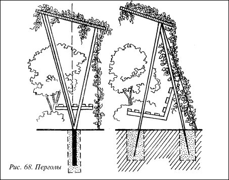
Рис. 68. Перголы
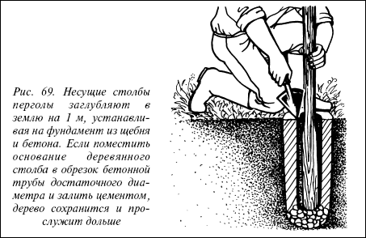
Рис. 69. Несущие столбы перголы заглубляют в землю на 1 м, устанавливая на фундамент из щебня и бетона. Если поместить основание деревянного столба в обрезок бетонной трубы достаточного диаметра и залить цементом, дерево сохранится и прослужит дольше
Слишком высокая пергола создает дискомфортное ощущение несоразмерности с другими строениями и деревьями на участке. Обычно рекомендуется оптимальная ширина перголы 2–2,5 м, но и тут, конечно, все зависит от общих пропорций сада. Высота перголы должна быть несколько больше по сравнению с ее шириной.
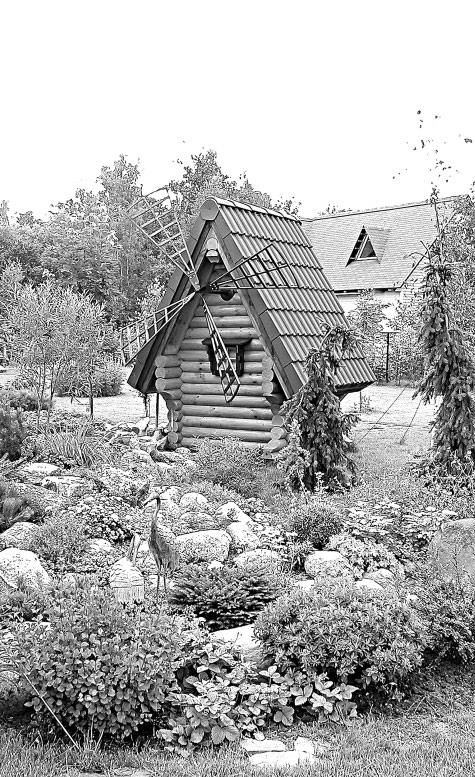
Несущие столбы и остальные части перголы должны быть достаточно прочными, так как вся конструкция должна выдерживать силу ветра и массу вьющихся растений, которые, разрастаясь, становятся достаточно тяжелыми.
Несущие столбы или колонны перголы, являющиеся основой всей конструкции, можно сделать из дерева (бруса или кругляка), бетонного массива или металлических труб, сложить из кирпича или природного камня.
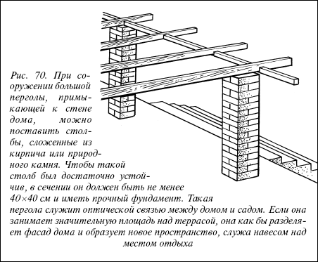
Рис. 70. При сооружении большой перголы, примыкающей к стене дома, можно поставить столбы, сложенные из кирпича или природного камня. Чтобы такой столб был достаточно устойчив, в сечении он должен быть не менее 40х40 см и иметь прочный фундамент. Такая пергола служит оптической связью между домом и садом. Если она занимает значительную площадь над террасой, она как бы разделяет фасад дома и образует новое пространство, служа навесом над местом отдыха
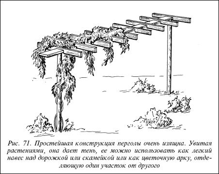
Рис. 71. Простейшая конструкция перголы очень изящна. Увитая растениями, она дает тень, ее можно использовать как легкий навес над дорожкой или скамейкой или как цветочную арку, отделяющую один участок от другого
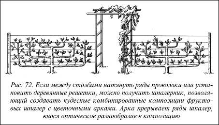
Рис. 72. Если между столбами натянуть ряды проволоки или установить деревянные решетки, можно получить шпалерник, позволяющий создавать чудесные комбинированные композиции фруктовых шпалер с цветочными арками. Арка прерывает ряды шпалер, внося оптическое разнообразие в композицию
Перекрытие перголы должно быть выполнено из деревянных балок, жердей или планок, так как вьющимся растениям легче прикрепиться к нему.
Проще всего соорудить деревянную перголу. Длина опорного столба должна составлять 33,5 м, сечение 12x12 см, возможно, больше.
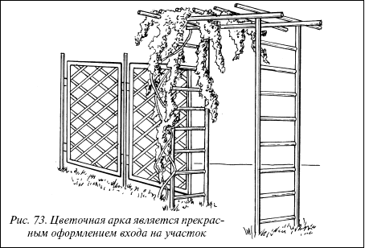
Рис. 73. Цветочная арка является прекрасным оформлением входа на участок
Несущие столбы вкапывают в землю на глубину 1 м, на фундамент из бетона и щебня. Значительно продлить жизнь деревянным столбам можно, поместив их в земле в бетонные кольца или трубы и залив цементом. Столбы размещают двумя параллельными рядами на расстоянии не более 2,5 м друг от друга.
Когда несущие столбы перголы установлены, необходимо создать решетчатое перекрытие из балок или деревянных реек. Для этого верхние концы столбов соединяют длинными перекладинами, а затем поперек укладывают балки длиной 3 м и прибивают точно над столбами. Поскольку столбы установлены на расстоянии 2,5 м, а жерди имеют длину 3 м, концы их будут выходить на 25 см к наружной стороне от столбов, создавая впечатление ажурности конструкции.
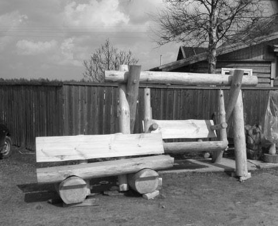
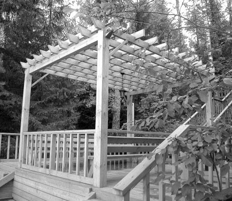
Отдельные части конструкции перголы должны быть плотно пригнаны друг к другу, чтобы между ними не попадала вода, что вызывает быстрое гниение дерева.
Еще до установки все деревянные части конструкции перголы обрабатывают герметизирующим и консервирующим составом или красят. Лучше всего пропитать их таким составом, который выявляет естественную структуру древесины и не меняет ее природный цвет.
В небольших садах особый уют и очарование придают изящные цветочные арки, увитые жимолостью, розами, клематисом. Такая арка способна стать центром композиции на участке, задать тон цветочному оформлению. Лучшим материалом для арок считается дерево, за которое легко зацепиться вьющимся растениям.
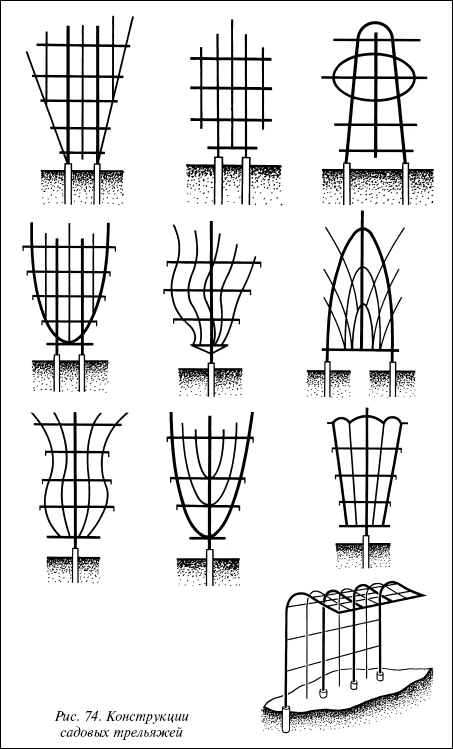
Рис. 74. Конструкции садовых трельяжей
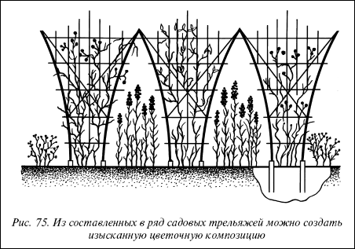
Рис. 75. Из составленных в ряд садовых трельяжей можно создать изысканную цветочную композицию
Верхняя часть арки может иметь прямую или скругленную дугообразную форму, в зависимости от нужного стиля оформления. Деревянные детали конструкции арок должны быть обработаны консервирующим составом или покрашены масляной краской. Несущие столбы для арок устанавливают так же, как при сооружении пергол.
Трельяжи представляют собой легкие ажурные конструкции из дерева или металла. Увитые вьющимися растениями, трельяжи образуют зеленые ширмы, поэтому их можно использовать для прикрытия или отделения друг от друга различных частей участка, например зоны дома от огорода, в качестве фона для цветочных композиций или оформления места отдыха.
Следует учесть
Все металлические детали трельяжей следует обработать антикоррозийным составом и покрыть краской или лаком для наружных работ по металлу.